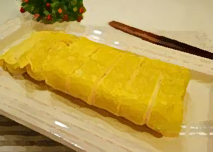

 계란에 맛술, 쯔유, 설탕과 다시마물을 넣고 잘
계란에 맛술, 쯔유, 설탕과 다시마물을 넣고 잘
풀어주세요.
 설탕이 녹을 정도로 잘 섞은 계란물은 체에 내려
설탕이 녹을 정도로 잘 섞은 계란물은 체에 내려
알끈과 잔거품을 제거해주세요.
 샤르텐 하겐노르딕 IH 사각 에그팬에 식용유를
샤르텐 하겐노르딕 IH 사각 에그팬에 식용유를
키친타월로 코팅하듯이 펴주세요.
 예열한 프라이팬 바닥에 깔리 정도로 계란물을
예열한 프라이팬 바닥에 깔리 정도로 계란물을
넣고 약불에서 익혀줍니다.
 적당히 두께감이 나왔으면 뒤집개로 꾹꾹 눌러
적당히 두께감이 나왔으면 뒤집개로 꾹꾹 눌러
계란말이를 말아주세요.
 준비한 계란물을 다 말았다면, 마무리로 꾹꾹 눌
준비한 계란물을 다 말았다면, 마무리로 꾹꾹 눌
러 모양을 잡으며 익혀주세요.
 짠~ 초반에 모양이 그렇게 엉망..이었는데 마무
짠~ 초반에 모양이 그렇게 엉망..이었는데 마무
리 완성은 그럴싸하죠?
 이제 타마고야키를 썰어줍니다.
이제 타마고야키를 썰어줍니다.

타마고야키
7개 15분 하 하
풀어주세요.
알끈과 잔거품을 제거해주세요.
키친타월로 코팅하듯이 펴주세요.
넣고 약불에서 익혀줍니다.
계란말이를 말아주세요.
러 모양을 잡으며 익혀주세요.
리 완성은 그럴싸하죠?
[재료]
계란
6~7알
맛술, 간장, 설탕
2큰술
다시마물
6~7큰술